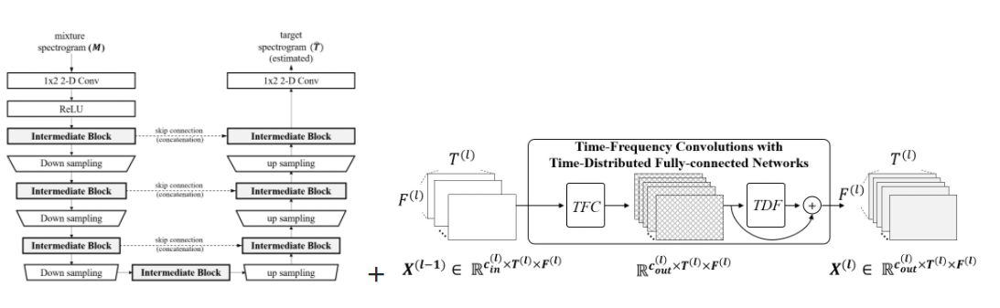

<!doctype html>
<html>
    <head>
        <meta charset="utf-8">
        <meta name="viewport" content="width=device-width, initial-scale=1.0, maximum-scale=1.0, user-scalable=no">

        <title>Woosung Choi - Dissertation</title>

        <link rel="stylesheet" href="dist/reset.css">
        <link rel="stylesheet" href="dist/reveal.css">
        <link rel="stylesheet" href="dist/theme/white.css">

        <!-- Theme used for syntax highlighted code -->
        <link rel="stylesheet" href="plugin/highlight/monokai.css">
    </head>
    <body>
        <div class="reveal">
            <div class="slides">

                <section data-markdown data-separator="---$" data-separator-vertical="--">
                    <script type="text/template">
                        ## LaSAFT: Latent Source Attentive Frequency Transformation for Conditioned Source Separation

                        Woosung Choi (ws_choi@korea.ac.kr)

                        Minseok Kim, Jaehwa Chung, Soonyoung Jung

                        Korea University, Korea National Open University
        
                        --

                        - Our code and models are available [online](https://github.com/ws-choi/Conditioned-Source-Separation-LaSAFT).

                        - You can also check separated samples from [here](https://lasaft.github.io/).

                        - [LightSAFT](https://www.aicrowd.com/challenges/music-demixing-challenge-ismir-2021/submissions/139491)
                         in [DMX challenge](https://www.aicrowd.com/challenges/music-demixing-challenge-ismir-2021/leaderboards?challenge_leaderboard_extra_id=675&challenge_round_id=886): a light weight version of our model

						--
						## Opening BGM

                        What a wonderful world - Louis Armstrong

                        <audio controls src="assets/www.wav" data-autoplay>Opening bgm</audio>
					
						<iframe width="560" height="315" src="https://www.youtube.com/embed/A3yCcXgbKrE" title="YouTube video player" frameborder="0" allow="accelerometer; autoplay; clipboard-write; encrypted-media; gyroscope; picture-in-picture" allowfullscreen></iframe>

                        --

                        ## Opening BGM

                        <audio controls src="assets/www.wav">Opening bgm</audio> 

                        ```python
                        from lasaft.pretrained import PreTrainedLaSAFTNet
                        model = PreTrainedLaSAFTNet(model_name='lasaft_large_2020')
                        # audio <- what_a_wonderful_world
                        what_a_wonderful_world_vocal = model.separate_track(audio, 'other')
                        ```


                    </script>
                </section>

                <section data-markdown data-separator="---$" data-separator-vertical="--">
                    <script type="text/template">
                        ## Contents
                        
                        - [Backgrounds](#/2): Task Definition
                        - [Summary](#/3) of our previous work: TDF
                        - [LaSAFT](#/5): Latent Source Attentive Frequency Transformation
                        - [GPoCM](#/6): More Ccomplex Manipulation than FiLM
                        - [Result](#/7): CU-NET WITH LASAFT + GPOCM

                        ---

                        ## Backgrounds
                        
                        --

                        ### Source Separation

                        - separates signals of the specific source from a given mixed-signal
                        - Music Source Separation, Speech Enhancement, ...
                            <center>
                            
                            </center>
                        - Datasets and Benchmarks
                            - [MUSDB18](https://paperswithcode.com/dataset/musdb18)
                            - [Slakh](http://www.slakh.com/)
                            - [DNS Challenge (Deep Noise Suppression Challenge)](https://paperswithcode.com/dataset/deep-noise-suppression-2020)
                            - [FUSS(Free Universal Sound Separation)](https://paperswithcode.com/dataset/fuss)

                        --

                        ### Taxonomy of source separation models

                        

                        --

                        ### Taxonomy of source separation models

                        - A Dedicated model: is dedicated to a single instrument.
                        - A Multi-head model: generates several outputs at once with a multi-head
                        - A Conditioned model: separates different instruments with the aid of the control mechanism
                            - Input: an input audio track $A$ and a one-hot encoding vector $C$ that specifies which instrument we want to separate
                            - Output: separated track of the target instrument

                        ---
                        
                        ## Summary of our previous work
                        
                        TDF: Time-Distributed Fully-Connected Layer
                        
                        --
                        
                        ## Summary of our previous work

                        - Injecting [TDF](https://github.com/ws-choi/Conditioned-Source-Separation-LaSAFT/blob/4680ac1a8c7108c63d34e10e3a7143bba4c9eda2/lasaft/source_separation/sub_modules/building_blocks.py#L101)s into a Fully 2-D Conv U-Net
                            - significantly improves SDR performance
                            - in Spectrogram-based Singing Voice Separation (**dedicated!**)

                        - [TDF](https://github.com/ws-choi/Conditioned-Source-Separation-LaSAFT/blob/4680ac1a8c7108c63d34e10e3a7143bba4c9eda2/lasaft/source_separation/sub_modules/building_blocks.py#L101): Time-Distributed Fully-Connected Layer                            - applied to each frame in a time-distributed manner

                            

                        --

                        ### Experimental Results: Singing Voice Separation

                        - Musdb18 reults
                            - Fully 2-D Convolutional U-Net: SDR **6.89**dB
                            - U-Net + TDF blocks: SDR **7.12**dB (+0.23 dB)

                              

                        --

                        ### More Information 

                        - Choi, Woosung., Kim, Minseok., Chung, Jaehwa., Lee, Daewon., and Jung, Soonyoung. “Investigating u-nets with various intermediate blocks for spectrogram-based singing voice separation.” 21th International Society for Music Information Retrieval Conference, ISMIR, 2020.
                        - [github](https://github.com/ws-choi/ISMIR2020_U_Nets_SVS), [paper](https://program.ismir2020.net/poster_2-04.html), [colab](https://colab.research.google.com/github/ws-choi/ISMIR2020_U_Nets_SVS/blob/master/colab_demo/TFC_TDF_Net_Large.ipynb), [demo](https://www.youtube.com/watch?v=DuOvWpckoVE)

                        <iframe width="560" height="315" src="https://www.youtube.com/embed/DuOvWpckoVE" title="YouTube video player" frameborder="0" allow="accelerometer; autoplay; clipboard-write; encrypted-media; gyroscope; picture-in-picture" allowfullscreen></iframe>

                        --

                        Backup slides ↓

                        --

                        ### Part 1: FTB for Source Separation
                        
                        1. **review**: a U-Net for Spectrogram-based Source Separation
                        2. **motivation**: Spectrogram $\neq$ Image
                             - What's wrong with CNNs and spectrograms for audio processing?
                             - Alternatives: 1-D CNNs, Dilated CNNs, FTBs, ...
                        3. **solution:** Frequency Transformation Blocks
                             - Employing Fully-Connected (FC) Layers to capture Freq-to-Freq Dependencies
                             - (empirical results) Injecting FCs, called FTBs,  into a Fully 2-D Conv U-Net significantly improves SDR performance
                        
                        --

                        ### 1.1. Review: Source Separation

                        - separates signals of the specific source from a given mixed-signal
                        - Music Source Separation, Speech Enhancement, ...
                            <center>
                            
                            </center>
                        - Benchmarks
                            - [MUSDB18](https://paperswithcode.com/dataset/musdb18)
                            - [DNS Challenge (Deep Noise Suppression Challenge)](https://paperswithcode.com/dataset/deep-noise-suppression-2020)
                            - [FUSS(Free Universal Sound Separation)](https://paperswithcode.com/dataset/fuss)
                        
                        --
                             
                        ### 1.1. Spectrogram-based Source Separation
                            
                        - Audio Equalizer - Eliminate signals with unwanted frequencies
                            

                        - Spectrogram-based Source Separation
                        1. Apply Short-Time Fourier Transform (STFT) on a mixture waveform to obtain the input spectrograms.
                        2. Estimate the vocal spectrograms based on these inputs 
                        3. Restore the vocal waveform with inverse STFT (iSTFT).
                        
                        -- 
                             
                        ### 1.1. Review: U-Net For Spectrogram-based Separation
                        
                        - Naive Assumption
                            - Assuimg a spectrogram is a two (left and right) - channeled image
                            - Spectrogram-based Source Separation can be viewed as an Image-to-Image Translation
                            
                        <center>
                        
                        </center>

                        --
                             
                        ### 1.1. Review: U-Net For Spectrogram-based Separation (2)
                        
                        - ..., and it works...!
                        - Jansson, A., et al. "Singing voice separation with deep U-Net convolutional networks." 18th International Society for Music Information Retrieval Conference. 2017.
                        - Takahashi, Naoya, and Yuki Mitsufuji. "Multi-scale multi-band densenets for audio source separation." 2017 IEEE Workshop on Applications of Signal Processing to Audio and Acoustics (WASPAA). IEEE, 2017.

                        --

                        ### 1.1. Review: U-Net For Spectrogram-based Separation (3)
                        
                        - Recall the assumption of this approach:
                            - Assuming a spectrogram is a two (left and right) - channeled image
                            - Spectrogram-based Source Separation $\approx$ Image-to-Image Translation
                            - (empirical results) **Fully 2-D Convs** can provide promising results

                        - Reality Check: Spectrogram $\neq$ Image
                            
                        --
                        
                        ### 1.2. Motivation: Spectrogram $\neq$ Image
                        
                        - Image
                            
                        
                        - Spectrogram
                            
                        
                        --

                        ### 1.2. Review: [convolutional](https://mlnotebook.github.io/post/CNN1/)

                        

                        --
                             
                        ### 1.2. Motivation: Spectrogram $\neq$ Image
                        
                        - [What's wrong with CNNs and spectrograms for audio processing?](https://towardsdatascience.com/whats-wrong-with-spectrograms-and-cnns-for-audio-processing-311377d7ccd)
                        - The axes of spectrograms do not carry the same meaning
                            - ***spatial invariance*** that 2D CNNs provide might not perform as well
                        - The spectral properties of sounds are non-local
                            - Periodic sounds are typically comprised of a fundamental frequency and a number of **harmonics** which are spaced apart by relationships dictated by the source of the sound. It is the mixture of these harmonics that determines the timbre of the sound.
                        
                        
                        
                        --
                             
                        ### 1.2. Motivation: Harmonics and Timbre
                        
                         
                    
                        Harmonics 
                        
                        
                        
                        Timbre of 'Singing Voice' - decided by resonance patterns
                        
                        --
                        
                        ### 1.3. Proposed Method: FTB
                        
                        - FTB: Frequency Transformation Blocks
                            - Time-Distributed Fully-Connected Layer ([TDF](https://lightsaft.github.io/slide/gaudio/#17))

                        

                        - Building Block TFC-TDF: Densely connected 2-d Conv (TFC) with TDFs
                        
                        
                        
                        --

                        
                        ### 1.3. Proposed Method: U-Net with TFC-TDFs

                        <center>
                          
                        
                        <p>+</p> 
                        
                        
                        </center>
                        
                        --
                        
                        ### 1.3. More Information

                        - Choi, Woosung., Kim, Minseok., Chung, Jaehwa., Lee, Daewon., and Jung, Soonyoung. “Investigating u-nets with various intermediate blocks for spectrogram-based singing voice separation.” 21th International Society for Music Information Retrieval Conference, ISMIR, 2020.
                        - [github](https://github.com/ws-choi/ISMIR2020_U_Nets_SVS), [paper](https://program.ismir2020.net/poster_2-04.html), [colab](https://colab.research.google.com/github/ws-choi/ISMIR2020_U_Nets_SVS/blob/master/colab_demo/TFC_TDF_Net_Large.ipynb), [demo](https://www.youtube.com/watch?v=DuOvWpckoVE)

                        <iframe width="560" height="315" src="https://www.youtube.com/embed/DuOvWpckoVE" title="YouTube video player" frameborder="0" allow="accelerometer; autoplay; clipboard-write; encrypted-media; gyroscope; picture-in-picture" allowfullscreen></iframe>

                        ---

                        ### In this work,
                        
                        - We propose
                            1. LaSAFT: Latent Source Attentive Frequency Transformation
                            2. GPoCM: Gated Point-wise Convolutional Modulation
                        - Experimental result!
                            - CU-Net with LaSAFT + GPoCM looks promissing!
                        
                        [](https://paperswithcode.com/sota/music-source-separation-on-musdb18?p=lasaft-latent-source-attentive-frequency)
                        
                        ---

                        ### Latent Source Attentive Frequency Transformation

                        --

                        ### CU-Net: Conditioned U-Net
                        - [1] Meseguer-Brocal, Gabriel, and Geoffroy Peeters. "CONDITIONED-U-NET: INTRODUCING A CONTROL MECHANISM IN THE U-NET FOR MULTIPLE SOURCE SEPARATIONS." Proceedings of the 20th International Society for Music Information Retrieval Conference. 2019.

                        --

                        ### Latent Source Attentive Frequency Transformation

                        - **review**: Conditioned-U-Net for Conditioned Source Separation [1]
                        
                        - **motivation**: Extending TDF to Conditioned Source Separation
                            - Naive Extention: Injecting TDFs into C-U-Net?
                            - (emprical results) It works, but ...
                        - **solution:** Latent Instrumant Attentive Frequency Transformation 

                        --

                        ### Review:  C-U-Net

                        - Conditioned-U-Net extends the U-Net by exploiting Feature-wise Linear Modulation (FiLM)

                        

                        ```bibtex
                        [1] Meseguer-Brocal, Gabriel, and Geoffroy Peeters. "CONDITIONED-U-NET: INTRODUCING A CONTROL MECHANISM IN THE U-NET FOR MULTIPLE SOURCE SEPARATIONS." Proceedings of the 20th International Society for Music Information Retrieval Conference. 2019.
                        ```

                        --

                        #### Review: C-U-Net using Feature-wise Linear Modulation

                        

                        --
                        
                        ### Motivation: Naive Extention
                        
                        

                        TFC vs TFC-TDF: above our expectation

                        - Although it does improve SDR performance by capturing common frequency patterns observed across all instruments,
                        - Merely injecting an FTB to a CUNet **does not inherit the spirit of FTBs**
                        - We propose the Latent Source Attentive Frequency Transformation (LaSAFT), a novel frequency transformation block that can capture instrument-dependent frequency patterns by exploiting the scaled dot-product attention

                        --
                        
                        ### Motivation: Latent Source
                        - Extending TDF to the Multi-Source Task
                        - Naive Extension: MUX-like approach
                            - A TDF for each instrument: $\mathcal{I}$ instrument => $\mathcal{I}$ TDFs
                            

                        - There are much more 'instruments' we have to consider in fact
                            - female-classic-soprano, male-jazz-baritone ... $\in$ 'vocals' 
                            - kick, snare, rimshot, hat(closed), tom-tom ... $\in$ 'drums'
                            - contrabass, walking bass piano (boogie woogie) ... $\in$ 'bass'  
                        
                        --

                        #### Latent Source Attentive Frequency Transformation

                        - We assume that there are  $\mathcal{I}_L$ latent instruemtns
                          - string-finger-low_freq
                          - string-bow-low_freq
                          - brass-high-solo
                          - ...
                        - We assume each instrument can be represented as a weighted average of them
                          - bass: 0.7 string-finger-low_freq + 0.2 string-bow-low_freq + 0.1 percussive-low                     
                        - LaSAFT
                          - $\mathcal{I}_L$ TDFs for  $\mathcal{I}_L$ latent instruemtns
                          - attention-based weighted average
                        
                        --

                        ### Conceptual View of LaSAFT
                        
                        

                        --

                        ### TDF vs LaSAFT
                                                
                        
                        

                        --
                                                
                        ### LaSAFT: Extending TDF to the Multi-Source Task 
                        - Suppose there are $\mathcal{I}$ instruments in the dataset (=4 in musdb18)
                        - We use $\mathcal{I}_{L}$ TDFs
                            - , where $\mathcal{I}_{L}>\mathcal{I}$
                        - For condition vector $C$, we attentively aggregate the TDFs' results.
                        - Effects of employing LaSAFTs instead of TFC-TDFs

                        

                        ---
                        
                        ### GPoCM: more complex manipulation than FiLM

                        --

                        #### Review: FiLM - Feature-wise Linear Modulation
                        
                        

                        - [2] Perez, Ethan, et al. "Film: Visual reasoning with a general conditioning layer." Proceedings of the AAAI Conference on Artificial Intelligence. Vol. 32. No. 1. 2018.

                        --
                        
                        ### PoCM vs FiLM

                        

                        FiLM: Feature-wise Linear Modulation

                        
                        
                        PoCM: Point-wise Convolutional Modulation

                        --

                        ### PoCM: more complex manipulation than FiLM

                        - PoCM is an extension of FiLM. 
                          - while FiLM does not have inter-channel operations
                          - PoCM has inter-channel operations

                          

                        --
                        
                        ### Experimental Results

                        

                        ---

                        ### CU-Net with LaSAFT + GPoCM

                        --
                        ### CU-Net with LaSAFT + GPoCM

                        [](https://paperswithcode.com/sota/music-source-separation-on-musdb18?p=lasaft-latent-source-attentive-frequency)

                        - achieved [state-of-the-art](https://paperswithcode.com/sota/music-source-separation-on-musdb18?p=lasaft-latent-source-attentive-frequency) SDR performance 
                            - on vocals and other tasks in Musdb18.
                        - good for Harmonic music instruments
                        - but not for percussion instruments
                        
                        
                        
                </script>
            </section>


            </div>
        </div>
        <script async src="https://platform.twitter.com/widgets.js" charset="utf-8"></script>
        <script src="dist/reveal.js"></script>
        <script src="plugin/notes/notes.js"></script>
        <script src="plugin/markdown/markdown.js"></script>
        <script src="plugin/highlight/highlight.js"></script>
        <script src="plugin/math/math.js"></script>
        <script>
            // More info about initialization & config:
            // - https://revealjs.com/initialization/
            // - https://revealjs.com/config/
            Reveal.initialize({
                math: {
                    mathjax: 'https://cdn.jsdelivr.net/gh/mathjax/mathjax@2.7.8/MathJax.js',
                    config: 'TeX-AMS_HTML-full',
                    // pass other options into `MathJax.Hub.Config()`
                    TeX: { Macros: { RR: "{\\bf R}" } }
                    },
                hash: true,
                slideNumber: true,
                // Learn about plugins: https://revealjs.com/plugins/
                plugins: [ RevealMarkdown, RevealHighlight, RevealNotes, RevealMath]
            });
        </script>
    </body>
</html>
